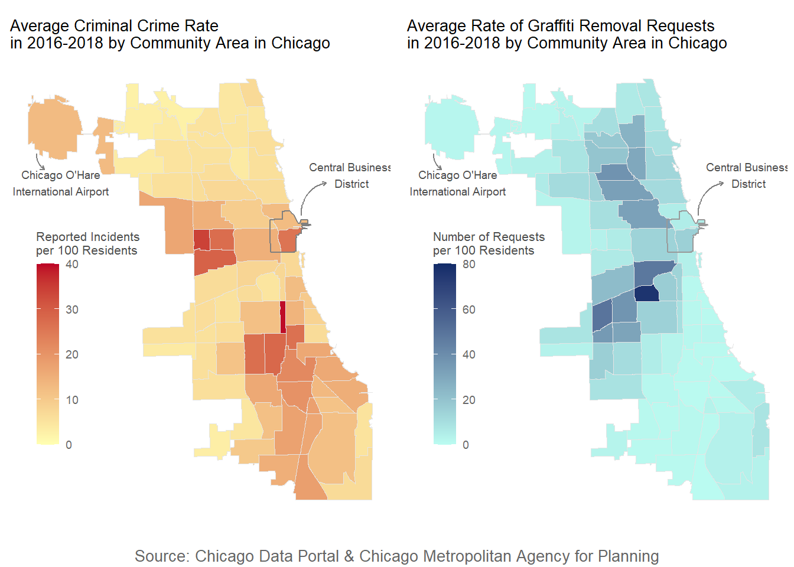
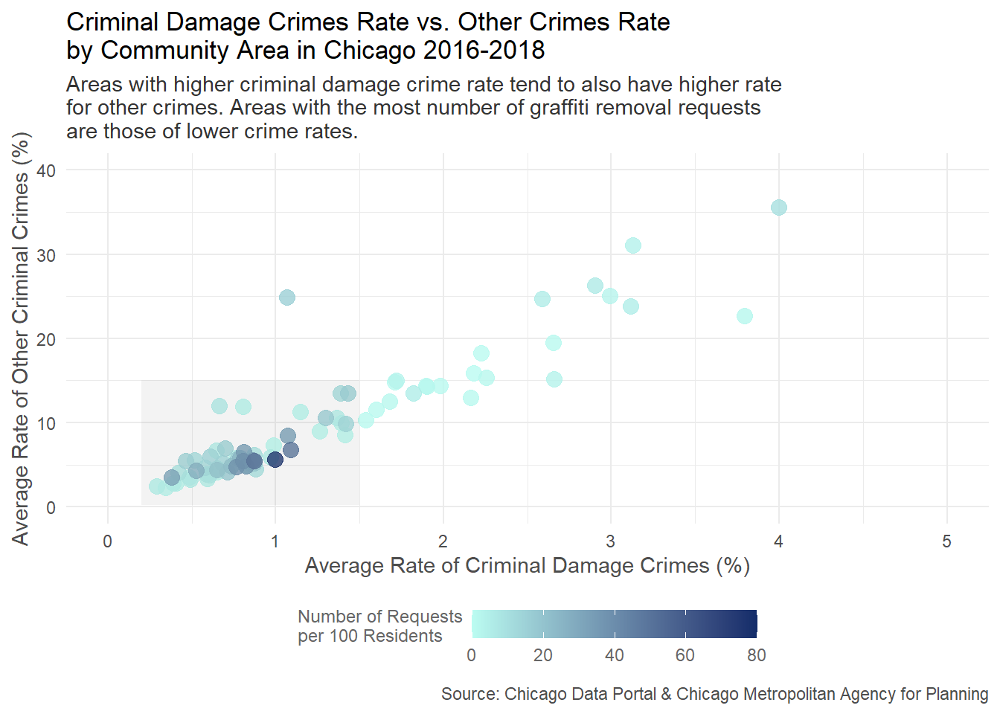
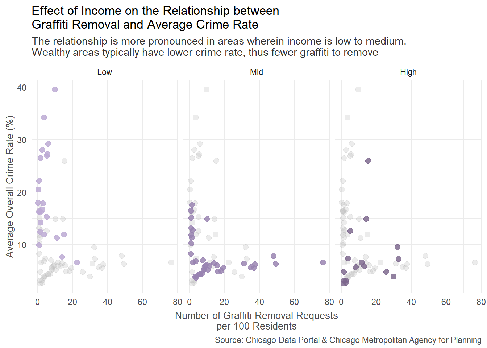

Graffitis vs. Crimes
Exploring the relationship between Graffiti Removal and Crime Rates in the City of Chicago
1 Introduction
The City of Chicago, with a population of about 2.7 million people, is one of the most popular cities in the United States, known for its vibrant and diverse neighborhoods (Data USA, 2020). However, Chicago has also gained attention for its crime rate, which has been a persistent challenge for the city. The issue of crime in Chicago has been a complex and multifaceted challenge, with various factors contributing to its prevalence. Graffiti has been an agonizing issue in urban areas, posing challenges to cities in terms of aesthetics, safety, and community well-being. As a result, I have conducted an analysis to study the relationship between graffiti removal and the crime rate in the City of Chicago, focusing specifically on criminal crimes and the years from 2016 to 2018 (most recent pre-COVID time to attain an understanding of the situation in normal circumstances).
This report aims to provide insights into the potential linkages between graffiti removal efforts and crime rates in Chicago. By analyzing and interpreting relevant data, we can gain a better understanding of how graffiti removal efforts may impact crime rates and inform strategies for addressing this issue in the city. This report will delve into the data findings, highlighting patterns and trends, and drawing evidence-based conclusions to shed light on the relationship between graffiti removal and crime rate in the City of Chicago.
2 Important Findings
2.1 A quick glance
The graph below is a side-by-side comparison of the crime rate and graffiti removal request rate in 77 community areas of Chicago.
The graph shows a contrasting relationship between the crime rate and graffiti removal request rate. That is, areas with more crimes tend to have fewer requests (per 100 residents) and vice versa. For example, the south area is one where this relationship is quite pronounced as it has a very high crime rate and a low number of graffiti removal requests. Overall, the relationship is not 100% clear on this map as there are areas where the crime rate and the request rate are both low (e.g. the far north area), but further discovery will be discussed in the sections below.
2.2 Criminal Damage Crimes and Other Criminal Crimes
One may argue that the number of graffiti removal requests in an area would depend on its level of criminal damage crime rate – that is, areas with more vandalism and similar incidents should have more graffiti, hence more removal requests than those with fewer graffiti. In this specific case, however, this is neither entirely true nor wrong.

This graph illustrates that areas with very high crime rates (either criminal damage or other criminal crimes) still have very few graffiti removal requests. Assuming that the criminal damage crime rate (which includes vandalism) is somewhat representative of graffiti incidents, this would imply that the low number of graffiti requests in high crime-level areas is not because these areas do not have any graffiti to remove, but simply because they do not do so. However, the question remains in the lower crime level areas: there is still a mixture of both high and low numbers of graffiti removal requests in the shaded area (low crime rate) in the graph above and it is shown more clearly in the graph below:
2.3 Income Plays an Important Role
One possible explanation for the observation in question above is that areas of higher levels of income generally have lower crime rates, or fewer graffiti vandalism incidents, hence lessening the need to submit a graffiti removal request.

The inverse relationship between graffiti removal and crime rate is quite clear in areas of low to medium income levels and less so for higher-income areas. Other factors may contribute to this relationship as well that might create some deviation from the main trend, but overall, graffiti removal, to some extent, appears to help with crime reduction.
3 Key Takeaway
Graffiti seems to be closely tied to an increase in crime incidents, and removing graffiti is demonstrated to potentially have an impact on reducing the crime rate. One proposed explanation for this phenomenon is the idea of crime as an epidemic, as described by Gladwell (2002):
It says that crime is contagious—just as a fashion trend is contagious—that it can start with a broken window and spread to an entire community. The Tipping Point in this epidemic, though, isn’t a particular kind of person—a Connector like Lois Weisberg or a Maven like Mark Alpert. It’s something physical like graffiti. The impetus to engage in a certain kind of behavior is not coming from a certain kind of person but from a feature of the environment (p.141).
From this theory, it is suggested that the surroundings are crucial in human behavior and decision-making, thus raising the importance of maintaining a clean environment in the battle against crimes, including removing graffiti.
Through this report, I hope to contribute to the ongoing discussions and efforts of city officials, law enforcement agencies, and community organizations in addressing graffiti vandalism and its potential impact on crime rates. By examining the data and providing evidence-based insights, this report aims to provide valuable information that can inform decision-making and support effective strategies to mitigate graffiti vandalism and the overall crime rate in the City of Chicago
4 References
Chicago, IL. Data USA. (n.d.). Retrieved April 23, 2023, from https://datausa.io/profile/geo/chicago-il
Gladwell, M. (2002). The Tipping Point: How Little Things Can Make A Big Difference (1st Back Bay pbk. ed). Back Bay Books
5 Code
This section is solely dedicated to demonstrate the code for data wrangling from the raw data to the one used to create the graphs in this report.
For the code used to generate the graphs or this document in general, see Code </> on the top of the document.
## Download the raw data (crime data)
crime = read_csv('https://data.cityofchicago.org/api/views/ijzp-q8t2/rows.csv?accessType=DOWNLOAD')
## Select columns of interest and years 2016-2018
crime_adj = crime |>
select(c(ID, Date, `Primary Type`, Description, `Location Description`, `Community Area`, Year)) |>
filter(Year > 2015 & Year < 2019)
## Focus on only criminal crimes
## and fix name of type "Crim Sexual Assault"
criminal = crime_adj |>
filter(!`Primary Type` %in% c("NON - CRIMINAL", "NON-CRIMINAL", "NON-CRIMINAL (SUBJECT SPECIFIED)")) |>
mutate(`Primary Type` = if_else(`Primary Type` == "CRIM SEXUAL ASSAULT", "CRIMINAL SEXUAL ASSAULT", `Primary Type`),
`Community Area` = as.character(`Community Area`))
## Download raw data on graffiti removal requests
graffiti = read_csv("https://data.cityofchicago.org/api/views/8tus-apua/rows.csv?accessType=DOWNLOAD")
## Select columns of interest
graffiti = graffiti |>
select(c(`Creation Date`, Status, `Completion Date`, `Community Area`))
## Demographics data on community areas
## data available at https://www.cmap.illinois.gov/data/data-hub
community = read_csv("data/cds_202207/cds_202207/ReferenceCCAProfiles20162020.csv") |>
select(c(GEOID, GEOG, TOT_POP, MED_AGE, UNEMP, NOT_IN_LBFRC,
LT_HS, HS, SOME_COLL, BACH, GRAD_PROF,
INC_LT_25K, MEDINC)) |>
mutate(GEOID = as.character(GEOID),
UNEMP = 100*UNEMP/TOT_POP,
NOT_IN_LBFRC = 100*NOT_IN_LBFRC/TOT_POP,
LT_HS = 100*LT_HS/TOT_POP,
HS = 100*HS/TOT_POP,
SOME_COLL = 100*SOME_COLL/TOT_POP,
BACH = 100*BACH/TOT_POP,
GRAD_PROF = 100*GRAD_PROF/TOT_POP,
INC_LT_25K = 100*INC_LT_25K/TOT_POP)
## Crime by Community Area
non_dam_crime_rate = criminal |>
filter(`Primary Type` != "CRIMINAL DAMAGE") |>
group_by(Year, `Community Area`) |>
summarise(total_incidents = n()) |>
ungroup() |>
left_join(community, by=c("Community Area" = "GEOID")) |>
mutate(crime_rate = 100*total_incidents/TOT_POP) |>
group_by(across(-c(Year,total_incidents, crime_rate))) |>
summarise(avg_non_dam_crime_rate = mean(crime_rate))
crim_dam_rate = criminal |>
filter(`Primary Type` == "CRIMINAL DAMAGE") |>
group_by(Year, `Community Area`) |>
summarise(total_incidents = n()) |>
ungroup() |>
left_join(community, by=c("Community Area" = "GEOID")) |>
mutate(crime_rate = 100*total_incidents/TOT_POP) |>
group_by(`Community Area`) |>
summarise(avg_crim_dam_rate = mean(crime_rate))
## Completed graffiti removal requests by Community Area
graffiti_summary = graffiti |>
mutate(`Creation Date` = mdy(`Creation Date`),
year = year(`Creation Date`),
`Community Area` = as.character(`Community Area`)) |>
filter(year < 2019 & year > 2015) |>
group_by(`Community Area`) |>
summarise(total_requests = n(),
completed = sum(Status == "Completed"))
## Final data used for plotting
community_crime = non_dam_crime_rate |>
inner_join(crim_dam_rate) |>
inner_join(graffiti_summary) |>
mutate(graffiti_requests_per_100 = 100*total_requests/TOT_POP)